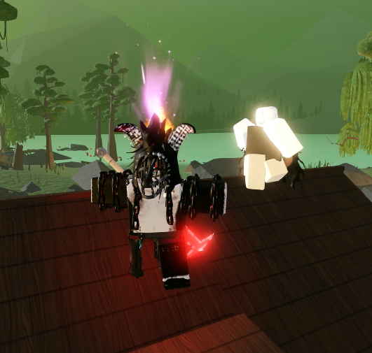
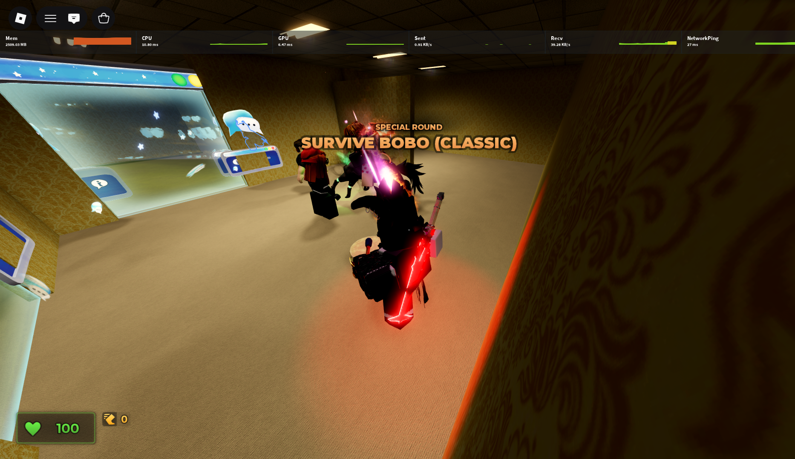

Platforma plná možností
Co je Roblox?
Roblox je online herní platforma, na které mohou uživatelé hrát miliony různých her a také vytvářet vlastní hry a zážitky. Hráči si mohou upravovat svého avatara, komunikovat s ostatními a objevovat světy vytvořené komunitou. Roblox je dostupný na počítačích, mobilech, tabletech i některých herních konzolích.
Moje zkušenost
Proč mám rád Roblox?
Roblox už hraju přes 8 let a stále mě baví, hlavně díky tomu, že pořád vznikají nové hry od hráčů z celého světa. Našel jsem si hry, které mi splnily dětské sny, a při hraní jsem začal komunikovat anglicky. Někteří hráči se stali mými kamarády a díky Robloxu jsem se naučil jistěji psát anglicky.
Každý si najde něco
Hry, které stojí za vyzkoušení
- Steal An Egg
- Brookhaven RP
- Murder Mystery 2
- Evade
Já osobně doporučuji Murder Mystery 2 nebo Evade, kterou hraju docela často.
Moje oblíbená hra
Evade: uteč, než tě dohoní!
Evade je týmová hra o přežití. Po mapě se ženou děsiví Nextboti a tvým úkolem je zůstat naživu až do konce kola. Utíkej, hledej bezpečné cesty a pomáhej spoluhráčům, které Nextbot srazil na zem. Když se tým dobře domluví, má každý větší šanci přežít.
Základní pohyb (výchozí ovládání na PC)
- W A S D — pohyb dopředu, doleva, dozadu a doprava.
- Shift — sprintuj, když potřebuješ rychle získat náskok.
- Space — skok přes překážky a změna směru.
- C — přikrčení; při běhu ho můžeš využít ke skluzu a rychlému proklouznutí.
Ovládání se může lišit podle zařízení nebo nastavení hry. Zatáčej včas, využívej prostor na mapě a nezapomeň sledovat spoluhráče.

